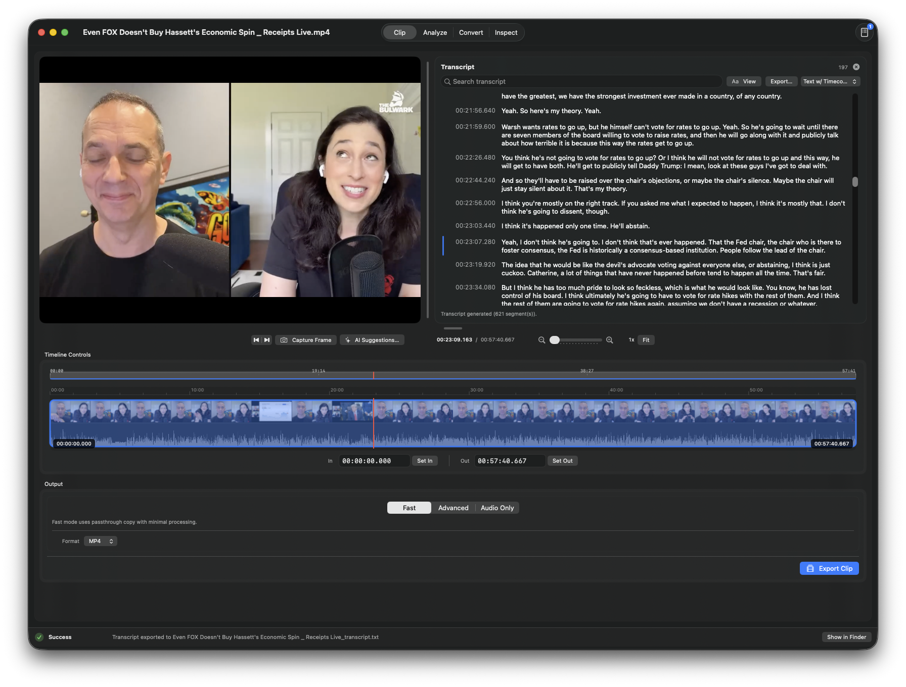

macOS Media Utility
Simple Clipping, Converting, and QA Testing of Videos
In/Out is built for fast editorial utility work: set accurate in/out points, export clips and audio, inspect technical metadata, and run QA checks for black frames, silence gaps, and transcript-level review without leaving a single app window.
In/Out Interface
A dark, timeline-first workspace designed for precise media edits, quick exports, and technical checks.

Key Features
- Fast clip workflow with timeline zoom, marker navigation, in/out shortcuts, and quick export.
- Multiple output paths: fast passthrough, advanced transcode controls, and audio-only exports.
- Built-in QA detection for black segments and silent gaps, with timeline visualization and segment lists.
- Inspect panel with codec/bitrate/frame rate/resolution metadata and transcript tools.
- Burned caption workflow powered by local Whisper integration for advanced clip exports.
It is intentionally focused on simple clipping and other video tasks rather than full nonlinear editing.
System Requirements
- macOS 12 Monterey or later
- Apple Silicon Mac
Early Development Warning
In/Out is in very early development and has not been extensively tested. Use at your own risk.
Download
Downloads are served from GitHub Releases. The button above automatically targets the latest zip asset for In/Out.
Download for macOS